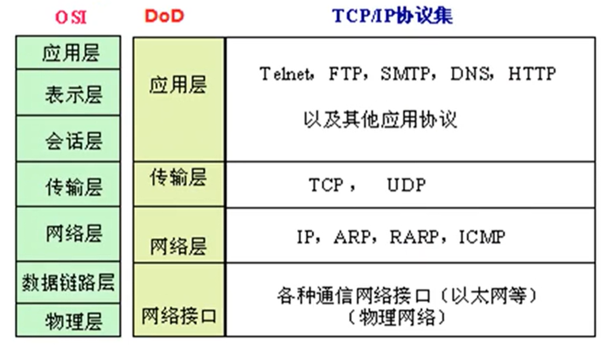
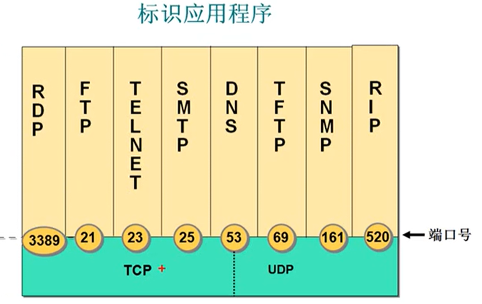
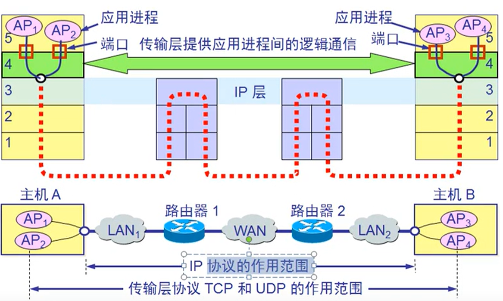
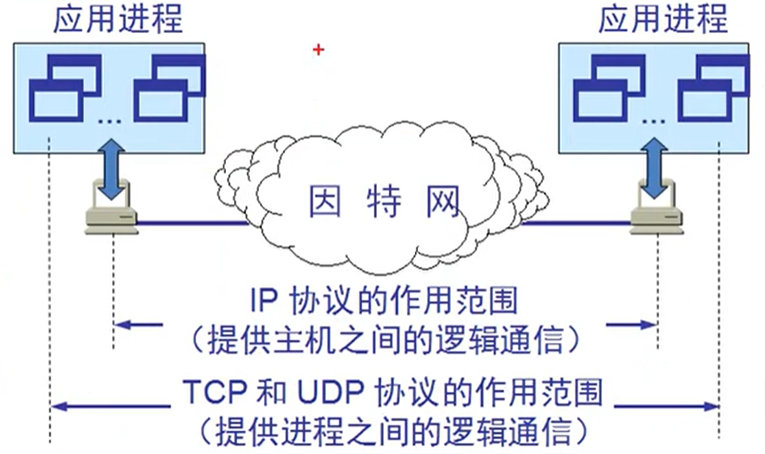
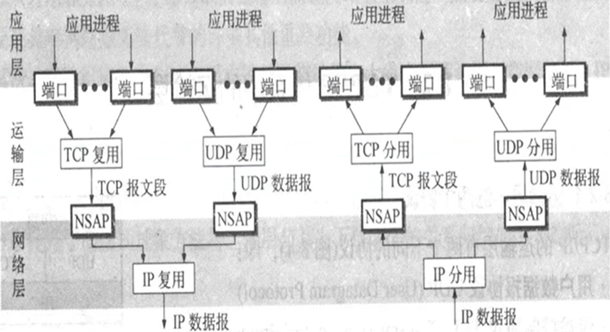
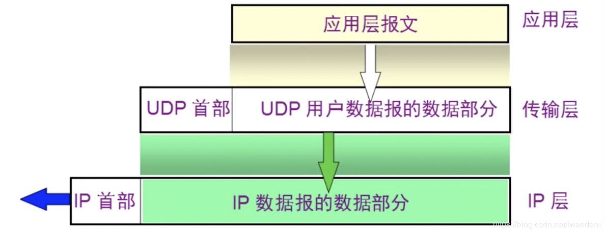
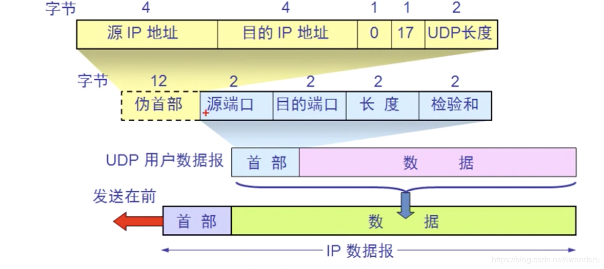
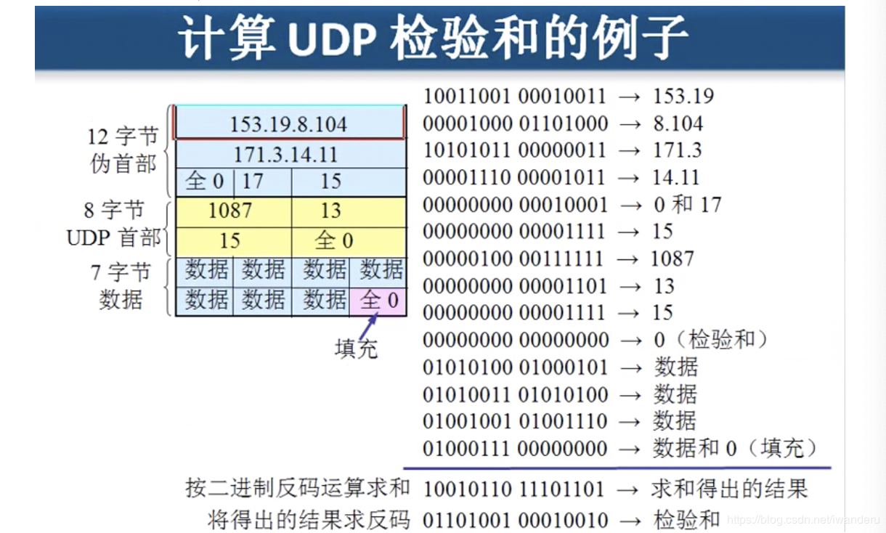

传输层概述与UDP协议简述 链接到标题
传输层的功能 链接到标题
- 传输层协议 UDP 和 TCP
- 网络安全
- TCP 可靠传输的实现
- TCP 的流量控制
- TCP 的拥塞控制
- TCP 的运输连接管理
OSI 和 DOD 模型 链接到标题

传输层两个协议 链接到标题
在 TCP/IP 协议栈，传输层有两个协议 TCP 和 UDP。
- TCP(Transmission Control Protocol)传输控制协议
- UDP(User Data Protocol)用户数据报协议
TCP 需要将要传输的文件分段 传输 建立会话 可靠传输 流量控制
UDP 一个数据包就能够完成数据通信 不分段 不需要建立会话 不需要流量控制 不可靠传输 (屏幕广播 多播 广播)
传输层协议和应用层协议之间的关系 链接到标题

常见的应用层协议使用端口 链接到标题
- http = TCP + 80
- https = TCP + 443
- RDP = TCP + 3389
- ftp = TCP + 21
- 共享文件夹 = TCP + 445
- SMTP = TCP + 25
- POP3 = TCP + 110
- telnet = TCP + 23
- SQL = TCP + 1433
- DNS = UDP + 53
服务和应用层协议之间的关系 链接到标题
- 服务使用 TCP 或 UDP 的端口侦听客户端请求
- 客户端使用 IP 地址定位服务器 使用目标端口定位服务
- 可以在服务器网卡上设置只开放必要的端口 实现服务器网络安全
- 可以更改服务使用的默认端口，迷惑病毒，让系统更安全
如何查看服务侦听的端口 链接到标题
netstat -a
netstat -an 以数字的形式查看端口
netstat -n 查看建立的会话
netstat -nb 查看建立会话的进程
telnet 192.168.80.100 3389 测试到远程计算机某个端口是否打开
传输层的功能 链接到标题

- 为相互通信的应用进程提供了端到端的逻辑通信
- 传输层还要对收到的报文进行差错检测
- 传输层提供面向连接和无连接的服务
传输层协议和网络层协议的主要区别 链接到标题

TCP 的端口 链接到标题

- 端口用一个 16 位端口号进行标志
- 端口号只具有本地意义，即端口号只为了标志本计算机应用层中的各进程。在因特网中不同的计算机的相同端口号是没有联系的。
- 熟知端口，数值一般为 0-1023.
- 登记端口号，数值为 1024-49151.
- 客户端口号，数值为 49152-65535.
UDP 协议 链接到标题
- UDP 是无连接的，即发送数据之前不需要建立连接
- UDP 使用最最大努力交付，既不保证可靠交付，同时也不使用拥塞控制。
- UDP 是面向报文的，UDP 没有拥塞控制，适合多媒体通信的要求。
- UDP 支持一对一，一对多，多对多的交互通信。
- UDP 的首部开销小，只有 8 字节。

UDP 的首部格式 链接到标题

首部中的长度指的是 UDP 用户数据报的长度(首部 + 数据)，伪首部用于检验和。
计算 UDP 检验和的例子 链接到标题
